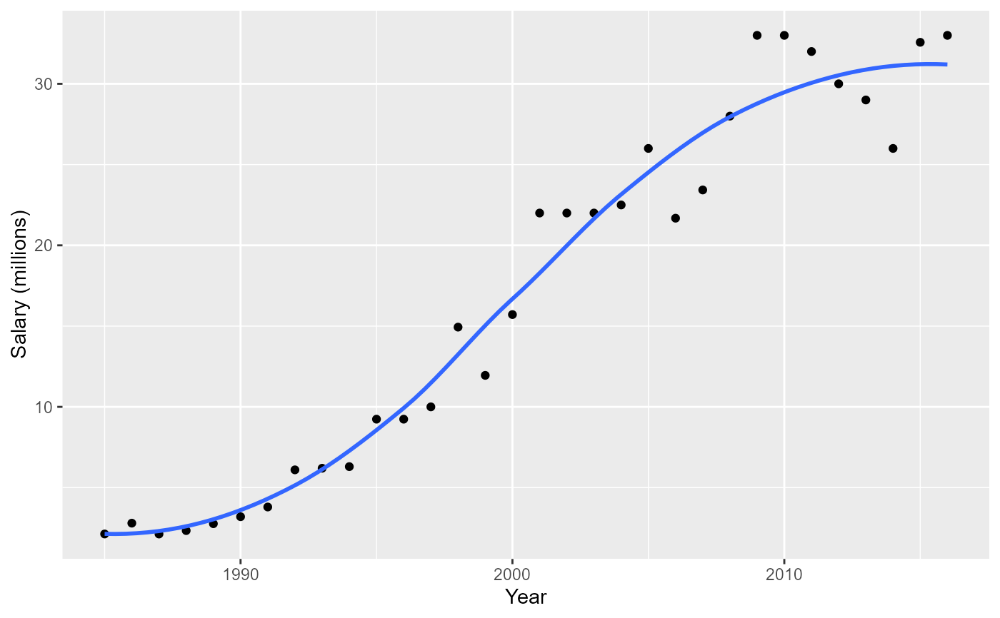
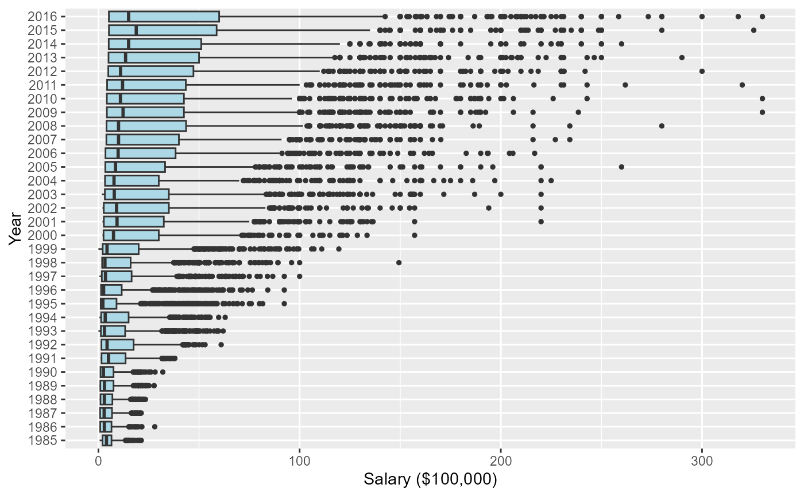
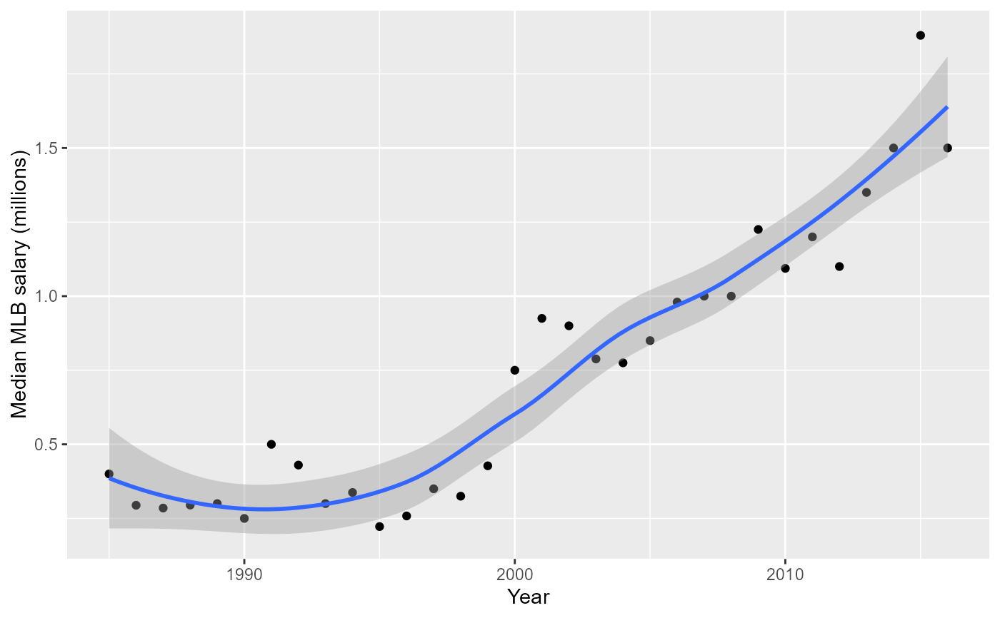
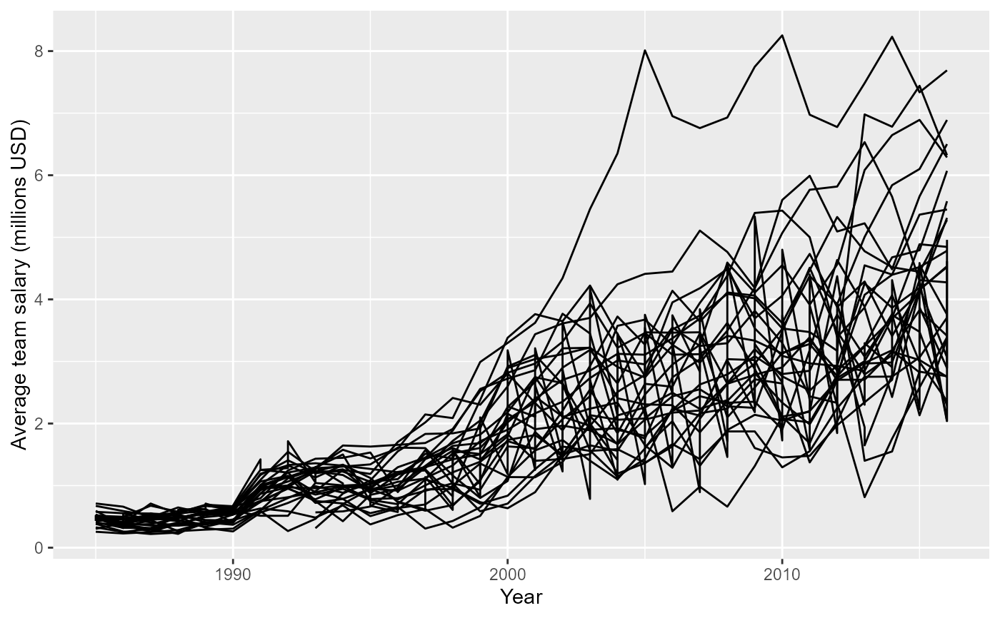

Salaries table
Salaries.RdPlayer salary data.
Usage
data(Salaries)Format
A data frame with 26428 observations on the following 5 variables.
yearIDYear
teamIDTeam; a factor
lgIDLeague; a factor
playerIDPlayer ID code
salarySalary
Source
Lahman, S. (2024) Lahman's Baseball Database, 1871-2023, 2024 version, http://www.seanlahman.com/
Examples
# what years are included?
summary(Salaries$yearID)
#> Min. 1st Qu. Median Mean 3rd Qu. Max.
#> 1985 1994 2001 2001 2009 2016
# how many players included each year?
table(Salaries$yearID)
#>
#> 1985 1986 1987 1988 1989 1990 1991 1992 1993 1994 1995 1996 1997 1998 1999 2000
#> 550 738 627 663 711 867 685 769 923 884 986 931 925 998 1006 836
#> 2001 2002 2003 2004 2005 2006 2007 2008 2009 2010 2011 2012 2013 2014 2015 2016
#> 860 846 827 831 831 819 842 856 813 830 839 848 815 802 817 853
# Team salary data
require("dplyr")
require("ggplot2")
# Total team salaries by league, team and year
teamSalaries <- Salaries %>%
group_by(lgID, teamID, yearID) %>%
summarise(Salary = sum(as.numeric(salary))) %>%
group_by(yearID, lgID) %>%
arrange(desc(Salary))
#> `summarise()` has grouped output by 'lgID', 'teamID'. You can override using
#> the `.groups` argument.
#######################################
# Highest paid players each year:
maxSal <- Salaries %>%
group_by(yearID) %>%
filter(salary == max(salary))
maxPlayers <- bind_rows(lapply(maxSal$playerID, playerInfo)) %>%
select(-playerID)
maxSal <- bind_cols(maxPlayers, maxSal)
# Plot maximum MLB salary by year (1985-present)
ggplot(maxSal, aes(x = yearID, y = salary/1e6)) +
geom_point() +
geom_smooth(se = FALSE) +
labs(x = "Year", y = "Salary (millions)")
#> `geom_smooth()` using method = 'loess' and formula = 'y ~ x'

# Plot salary distributions by year for all players
ggplot(Salaries, aes(x = factor(yearID), y = salary/1e5)) +
geom_boxplot(fill = "lightblue", outlier.size = 1) +
labs(x = "Year", y = "Salary ($100,000)") +
coord_flip()

# Plot median MLB salary per year
Salaries %>%
group_by(yearID) %>%
summarise(medsal = median(salary)) %>%
ggplot(., aes(x = yearID, y = medsal/1e6)) +
geom_point() +
geom_smooth() +
labs(x = "Year", y = "Median MLB salary (millions)")
#> `geom_smooth()` using method = 'loess' and formula = 'y ~ x'

# add salary to Batting data
batting <- Batting %>%
filter(yearID >= 1985) %>%
left_join(select(Salaries, playerID, yearID, teamID, salary),
by=c("playerID", "yearID", "teamID"))
str(batting)
#> 'data.frame': 51544 obs. of 23 variables:
#> $ playerID: chr "aardsda01" "aardsda01" "aardsda01" "aardsda01" ...
#> $ yearID : int 2004 2006 2007 2008 2009 2010 2012 2013 2015 1985 ...
#> $ stint : int 1 1 1 1 1 1 1 1 1 1 ...
#> $ teamID : Factor w/ 149 levels "ALT","ANA","ARI",..: 117 35 33 16 116 116 93 94 4 5 ...
#> $ lgID : Factor w/ 7 levels "AA","AL","FL",..: 5 5 2 2 2 2 2 5 5 2 ...
#> $ G : int 11 45 25 47 73 53 1 43 33 54 ...
#> $ AB : int 0 2 0 1 0 0 0 0 1 0 ...
#> $ R : int 0 0 0 0 0 0 0 0 0 0 ...
#> $ H : int 0 0 0 0 0 0 0 0 0 0 ...
#> $ X2B : int 0 0 0 0 0 0 0 0 0 0 ...
#> $ X3B : int 0 0 0 0 0 0 0 0 0 0 ...
#> $ HR : int 0 0 0 0 0 0 0 0 0 0 ...
#> $ RBI : int 0 0 0 0 0 0 0 0 0 0 ...
#> $ SB : int 0 0 0 0 0 0 0 0 0 0 ...
#> $ CS : int 0 0 0 0 0 0 0 0 0 0 ...
#> $ BB : int 0 0 0 0 0 0 0 0 0 0 ...
#> $ SO : int 0 0 0 1 0 0 0 0 1 0 ...
#> $ IBB : int 0 0 0 0 0 0 0 0 0 0 ...
#> $ HBP : int 0 0 0 0 0 0 0 0 0 0 ...
#> $ SH : int 0 1 0 0 0 0 0 0 0 0 ...
#> $ SF : int 0 0 0 0 0 0 0 0 0 0 ...
#> $ GIDP : int 0 0 0 0 0 0 0 0 0 0 ...
#> $ salary : int 300000 NA 387500 403250 419000 2750000 500000 NA NA NA ...
#######################################
# Average salaries by teams, over years
#######################################
# Some franchises are multiply named, so add a new variable
# 'franchise' to the Salaries data as a lookup table
franchise <- c(`ANA` = "LAA", `ARI` = "ARI", `ATL` = "ATL",
`BAL` = "BAL", `BOS` = "BOS", `CAL` = "LAA",
`CHA` = "CHA", `CHN` = "CHN", `CIN` = "CIN",
`CLE` = "CLE", `COL` = "COL", `DET` = "DET",
`FLO` = "MIA", `HOU` = "HOU", `KCA` = "KCA",
`LAA` = "LAA", `LAN` = "LAN", `MIA` = "MIA",
`MIL` = "MIL", `MIN` = "MIN", `ML4` = "MIL",
`MON` = "WAS", `NYA` = "NYA", `NYM` = "NYN",
`NYN` = "NYN", `OAK` = "OAK", `PHI` = "PHI",
`PIT` = "PIT", `SDN` = "SDN", `SEA` = "SEA",
`SFG` = "SFN", `SFN` = "SFN", `SLN` = "SLN",
`TBA` = "TBA", `TEX` = "TEX", `TOR` = "TOR",
`WAS` = "WAS")
Salaries$franchise <- unname(franchise[Salaries$teamID])
# Average salaries annual salaries by team, in millions USD
avg_team_salaries <- Salaries %>%
group_by(yearID, franchise, lgID) %>%
summarise(salary= mean(salary)/1e6) %>%
filter(!(franchise == "CLE" & lgID == "NL"))
#> `summarise()` has grouped output by 'yearID', 'franchise'. You can override
#> using the `.groups` argument.
# Spaghetti plot of team salary over time by team
# Yankees have largest average team salary since 2003
ggplot(avg_team_salaries,
aes(x = yearID, y = salary, group = factor(franchise))) +
geom_path() +
labs(x = "Year", y = "Average team salary (millions USD)")
